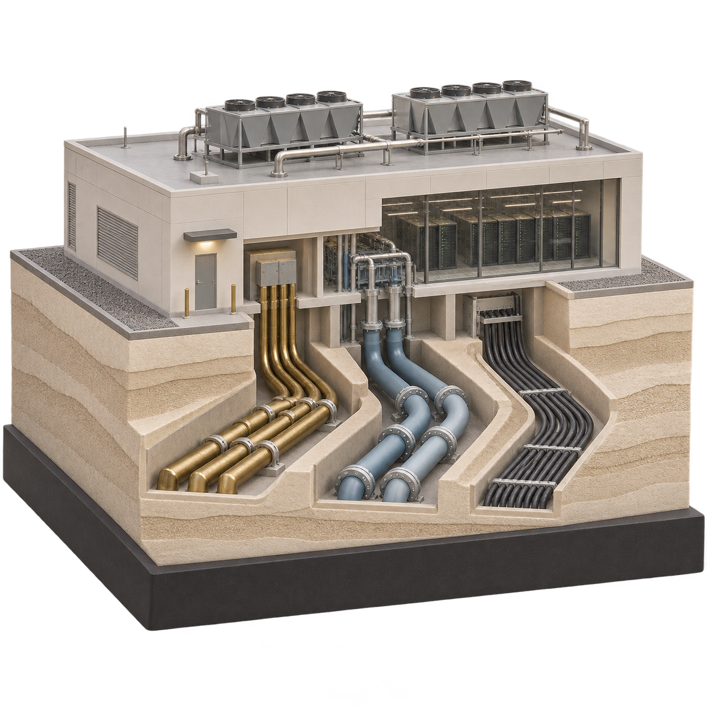
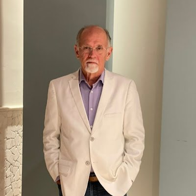

Investment diligence
Before you commit capital.
A clear read on the market, competition, IP exposure, team, and risks that could change the investment decision. Sized for a deal timeline.
↗Less Goudarzi · Synthesize Leverage, LLC
I help investors, founders, and boards evaluate opportunities and make strategic decisions across energy, space, and AI infrastructure.

How I help
The question may be complex. The work should leave you with a clear recommendation and a straight answer on what is still uncertain.
Before you commit capital.
A clear read on the market, competition, IP exposure, team, and risks that could change the investment decision. Sized for a deal timeline.
↗Before you choose a direction.
Market entry, M&A, pivots, and repositioning. A recommendation with the trade-offs and alternatives laid out so you can act.
↗Before the next major vote.
An independent view of how AI, energy policy, space, and supply chains affect your company, including where the uncertainty remains.
↗When you need an operator in the room.
Ongoing senior strategy support for leadership teams without a full-time hire. Includes board and advisory roles.
↗What you receive
I use an AI-assisted research and review process built in-house to cover more ground and check conclusions. The judgment, and the accountability, stay with me.
A course of action with the trade-offs and alternatives laid out clearly.
The findings and sources behind the recommendation, available for scrutiny.
What remains uncertain, what to watch, and what could change the answer.
Who I work with
Evaluate a company before committing capital.
Diligence and portfolio questions for VC and PE funds, family offices, and angel groups. Sized for the deal timeline.
Discuss an investment decision ↗Pressure-test the direction before the next move.
An outside operator's view on market entry, a pivot, an acquisition, or a raise strategy.
Discuss your next move ↗Bring an independent view to a major decision.
Understand how changes in AI, energy, space, and supply chains affect your company ahead of a vote.
Discuss a board question ↗Writing
Essays on the economics of energy, space, and AI infrastructure.

Less Goudarzi
Founder, Synthesize Leverage
Florida Space Coast
About Less
Four decades of running a business, modeling markets, and making decisions with consequences.
I started at MITRE and the Synthetic Fuels Corporation. In 1984, I founded OnLocation, an energy and economic modeling firm that became a long-term partner to federal energy research and policy analysis.
I led it as CEO for 36 years, until KeyLogic Systems acquired it in 2020, and stayed on as founder and strategic advisor.
Since 2016, through Synthesize Leverage, I’ve invested in and advised early-stage companies, mostly in space, energy, and AI. I invest through Space Angels, Balerion Space Ventures, OurCrowd, and direct syndicates. I advise Hometown Grid and the Space Coast Valley initiative.
MBA, Management Science, Virginia Tech
BA, Wittenberg University
Start a conversation
Tell me briefly what you’re working on and your timeline. I read every note myself and will reply within two business days if it looks like a fit.
Less.Goudarzi@synleverage.com ↗